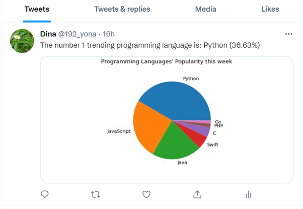

PowerShell Project: Twitter API
This project was part of my Windows System Administration class at Thomas More. In this project, I worked with PowerShell to make a script that analyzes tweets using Python.
Showcase
Project Video Demo
I would like to share with you this YouTube video I made to explain this project.
Feel free to view the entire documentation for this project:
Download DocumentationWhat I learned during this project
During this individual project, I learned how to work with Twitter API and PowerShell. This project required a lot of looking up online, which enhanced my search skills. Many times I was faced with trial and error which I came to realize is a natural process when learning for a computer science degree. It made me more resilient and curious to know more and try things on my own. I believe such skills are essential for a programmer as technology is constantly evolving and learning is a never-ending process in this career. Through this project, I also enhanced my knowledge of the Windows system, which has already started to benefit me whenever I face any problem on my laptop. I learned where to look when troubleshooting problems.